KK 少年案例解析“ KK 少年”是华与华方法在服装行业小试牛刀的成功验证，也是华与华赋能中小企业战略转型的标杆案例。
在服务客户的两年时间里，华与华以品牌命名为起手式，重构企业战略，与客户同甘共苦二次创业，从 0 到 1 打造了专业少年装品牌“ KK 少年”，并持续赋能企业经营管理，助力其从童装红海中闯出一片少年装蓝海，成为中国少年装的代表品牌。本文将从 3 个方面为您详细解析 KK 少年案例：1 、确定核心课题，规划企业转型战略；2 、一次做对做全，重构品牌顶层设计；3 、两大系统抓手，赋能企业经营管理。项目背景“今童王服饰”诞生于 1996 年，是中国最早的童装企业之一，成立二十五年来先后打造出“今童王”（ KBOY & KGIRL ）和“芝麻开门”（ OPEN SESAME ）两大童装名牌，前者曾连续四次被中国服装协会评为“中国十大童装品牌”，在业内外备受赞誉。然而，伴随着国外品牌的抢滩登陆和本土“淘品牌”的强势崛起，中国服装业在 2010 年前后发生剧变，竞争异常激烈。作为传统制造批发型服装企业，今童王的销售额也开始逐年走低。期间，今童王曾多次尝试转型： 2011 年打造“今童王世界”，开发玩具、鞋服、生活馆等全品类大小童一体店； 2017 年尝试将“芝麻开门”培育为零售型品牌； 2018 年探索将今童王品牌定位为“轻奢潮品少年装”…...然而这些探索举措，仍无法扭转企业的下滑趋势。 2019 年 9 月，今童王找到华与华，开启了涅槃重生之路。
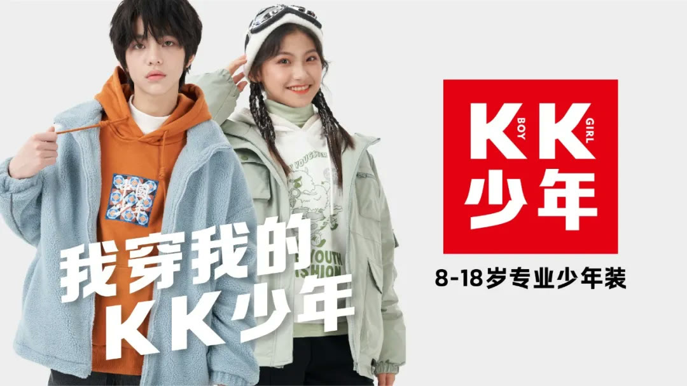
1确定核心课题规划企业转型战略今童王所在的童装行业规模庞大且竞争激烈，覆盖婴童、小童、中童到大童等不同阶段的消费者，产品风格更是千差万别，是一片成熟的红海市场。一企一策，一事一议。对历经多次转型探索仍未有起色的今童王而言，首先要确定核心课题：企业转型的方向是什么？华与华认为，企业只是社会的器官，是为解决某一社会问题而存在的。一个社会问题，就是一个商业机会。一个巨大的社会问题，就是一个巨大的商业机会。企业战略不是企业的战略，而是企业为解决某一社会问题，为社会制定的战略。
因此，不能只是对比各种可能的转型路径，而是要回归课题的本质：服装市场存在什么问题，是今童王企业的资源禀赋可以解决的？
服装市场的痛点问题：“大孩子不好买衣服”一切问题都在现场。项目启动之初，我们就进行了深度调研，走访了上海、浙江、江苏和安徽 8 个城市 260 余家服装门店，访谈店员和消费者。在访谈中，我们注意到他们反复提及的一个问题：“大孩子不好买衣服。”他们口中的大孩子，大多已进入青春期。
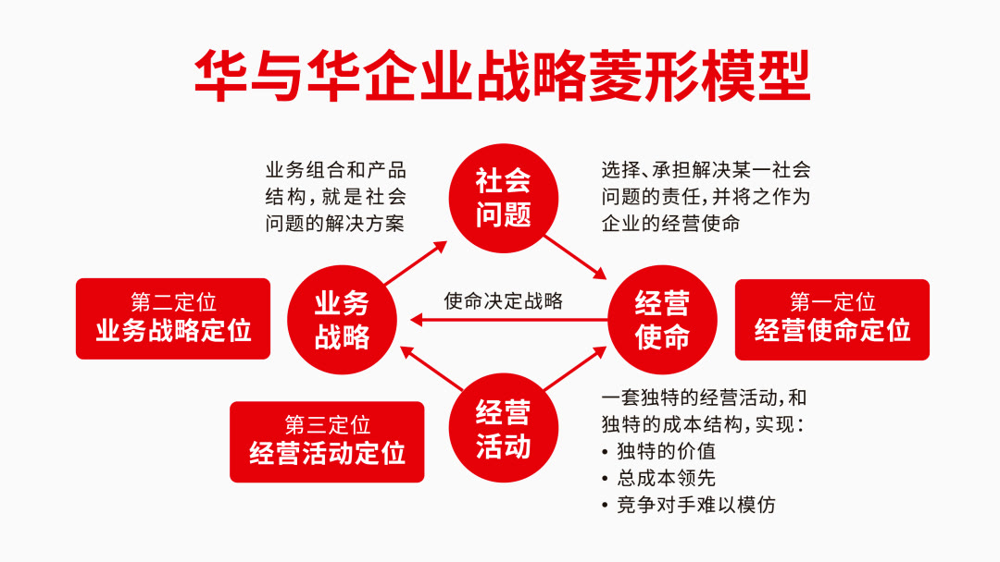
世界卫生组织通常将青春期定义为 10 - 20 岁，而在中国一般指 11 - 17 岁的少年。青春期前后的少年身心状态有天壤之别：青春期前的少年更接近儿童，而青春期后的少年更趋近成年人。而服装行业通常将童装按年龄分为：婴童（ 12 个月内）、小童（ 1 - 3 岁）、中童（ 4 - 7岁）和大童（ 8 - 14 岁），但这只是业内的分法，绝大多数消费者并不知晓。
这就产生了一个问题： 14 - 17 岁少年的着装需求被童装行业忽视了。我们还发现，大童（ 8 - 14 岁）其实也不喜欢穿市面上的大童装。总之，对这些 8 - 17 岁的大孩子来说，买衣服是个令人头疼的大问题：一方面，适合这些大孩子穿的服装非常少。少男少女进入青春期后，自我意识逐渐成熟，已形成自己的审美偏好，对买衣服非常有主见，而且心理敏感脆弱，容易因着装问题感知到群体压力。但市场上可供少年选择的服装中，大尺码的童装设计太过幼稚，小尺码的成人装设计又稍显成熟，少年们需要真正适合自己的服装。另一方面，家长的选择成本也很高。少年们忙于学业，逛街时间很少，往往由家长陪同或代为购买，但市场上几乎没有专属青少年的服饰可供选择。家长经常要在休闲成人装、运动成人装和大童装的众多品牌中千挑万选，但结果往往因为孩子不满意而又反复退换，这种情况非常普遍。“大孩子不好买衣服”，这既是家长和少年的消费痛点，也是童装市场存在已久的大问题。而今童王企业的资源禀赋，让解决这一问题成为了可能。
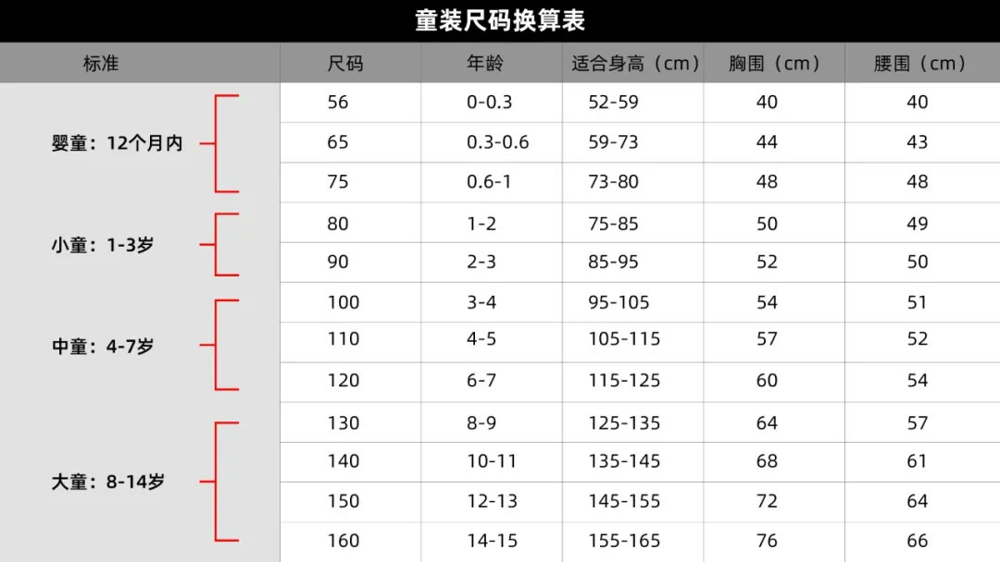
今童王的资源禀赋：“童装之都”的王者大孩子不要穿成人装，也不要穿童装，大孩子要穿适合自己的少年装。选择做少年装，今童王具有天然优势。今童王的生产制造中心位于浙江湖州的织里镇。这个貌不惊人的小镇被誉为“中国童装之都”，每年童装生产量占全国一半以上，而在织里众多服装生产企业中，今童王综合实力最强，素有“中国童装看织里，织里童装今童王”之说。
凭借织里的产业集聚优势和自建工厂的强大生产能力，今童王积极整合产业上下游供应链资源，成功打造出了快速、灵活且低成本的制造体系。
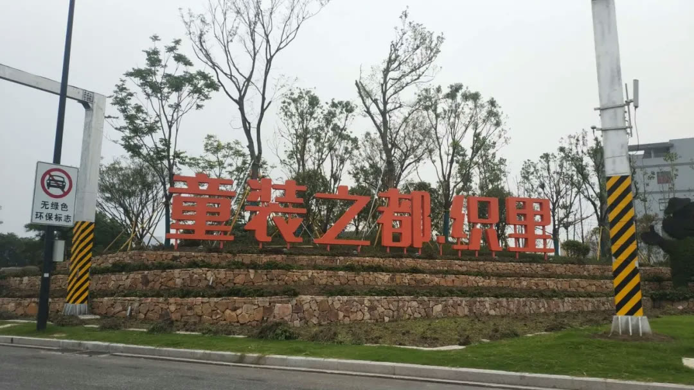
更难能可贵的是，今童王有做少年装的基因：在创立之初，今童王就是靠一款“大童夹克衫”风靡大江南北。而在随后的二十多年里，今童王也一直在中大童服装领域深耕，积累了丰富的产品设计经验和大童形体数据；在门店卖得最好的产品，也主要集中在 140 - 160 ，而这个尺码段已涉及部分低龄少年群体。今童王就是要充分利用并放大这些资源禀赋，着手解决“大孩子不好买衣服”的社会问题，并将其作为自身的经营使命。成本更低、品质更好，而且也更专业：做少年装，今童王当仁不让！潜力巨大的市场机会，加上多年积累的资源禀赋，今童王战略转型路径也呼之欲出：从综合的童装制造批发零售商，向专业的少年装连锁品牌运营商转变。聚焦企业所有资源，从 0 到 1 打造一个专业的少年装品牌，并引领整个少年装行业越做越大。那么，这个少年装品牌该如何定位呢？我们的企图心是在童装和成人装之间，创造一个全新的少年装品类。因此，华与华将这个少年装品牌定位为“ 8 - 18 岁专业少年装”，向下覆盖大童（ 8 - 14岁），向上接续成人（ 18 岁）。
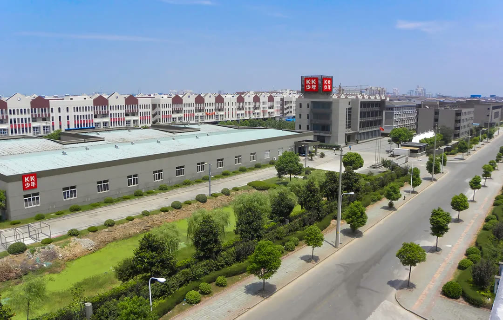
从此服装分类便不再是“婴童装、小童装、中童装、大童装和成人装”，而是“童装、少年装和成人装”，真正为社会解决“大孩子不好买衣服”的问题。
2一次做对做全重构品牌顶层设计从 0 到 1 创建一个全新品牌，顶层设计是关键，甚至决定了品牌未来的成败。华与华的一个核心价值，就是帮助企业系统化建构品牌顶层设计，一次做对，一次做全，从而持续积累品牌资产，最终成为超级品牌。
华与华用品牌战略三角模型来建构品牌顶层设计。在本案例中，我们从该模型的三个维度重点做了以下重构：话语体系：品牌名及品牌谚语；符号系统：超级符号及超级门头；产品结构：产品设计及品类结构。
话语体系：品牌名及品牌谚语品牌名：既是成本，也是召唤，还是投资。就像一个孩子诞生，首先要为他起个名字；一个新品牌诞生，同样要先有名字。确定转型为专业少年装品牌后，“今童王”（ KBOY & KGIRL ）迫切需要一个新的品牌名。华与华方法认为：命名就是成本，命名就是召唤，命名就是投资。
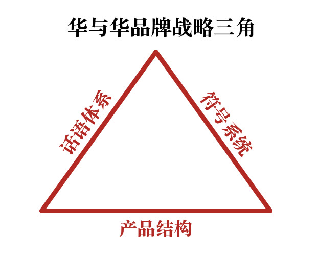
1 ）命名就是成本：命名的第一原则是成本，品牌要尽可能选择那些成本低的名字。成本低就是要好理解，好记忆，好传播，也要好营销。比如，电脑品类中，“苹果”的命名就要好过“戴尔”，因为苹果是全世界最普通、最常见的一种水果，人人都熟悉，看见一次就记住了。“今童王”中英文名成本都是极高的。“今童”容易混淆为“金童玉女”的“金童”，而英文名 KBOY & KGIRL ，绝大多数家长都念不出来，更别说理解、记忆和传播了。2 ）命名就是召唤：命名的第二原则是召唤，你的品牌名，是否有指向性很强的召唤，是否下达了明确的指令。比如，丰田曾经将其在中国的品牌和产品进行了全线改名，如“陆地巡洋舰”改为“兰德酷路泽”等。这便是将召唤性超强而成本超低的好名字改为无任何召唤性的名字。召唤，是词语的能动性，它能将品牌的价值和顾客召唤来，如“陆地巡洋舰”能将其价值和顾客召唤来，“兰德酷路泽”就不能。在实际的市场调研中，很多店员和家长都向我们反映，“今童王”的“童”字听起来有些幼稚，很多十几岁的大孩子一看到“今童王”三个字，就觉得是小孩子穿的童装品牌，心理上较为抵触，即使家长把衣服买回家也不会穿。这说明“今童王”品牌名的召唤性并不强，无法有效吸引少年群体。3 ）命名就是投资：一旦确定了品牌名，就是一个长期的投资，要不断重复，不要轻易改动。只有这样，才能不断积累品牌资产，为企业带来效益。二十多年来，今童王曾频繁改动中英文名，每一次改动都是品牌资产的重大流失。
从成本、召唤和投资的角度来看，“今童王”确实不是好名字，但已在渠道大规模沉淀，合作多年的经销商只认“今童王”。如果完全推翻现有品牌名，便无法充分利用现有的渠道资源，另起炉灶的难度非常大，只能在现有品牌名基础上做文章。怎么做呢？我们发现，很多有类似问题的英文品牌会使用简称，比如 Calvin Klein ，消费者会简称为 CK ，再比如著名奢侈品牌 LOUIS VUITTON ，消费者会简称为 LV 。今童王也可以用简称的办法，提炼出“ KBOY ＆ KGIRL ”中的“ K ”，简称为 KK ，但这还不够。在华与华方法中，凡事都要寻找到哲学级的洞察和原理级的解决方案。换言之，弄清一件事，要从根本上去定义它，要找到它最底层的逻辑和原理。命名的一个底层原理是：词语的权能大于话语的权能，品牌名的权能大于品牌口号的权能。假如别克出了一款高配置的商务车，它用一句口号：“全新别克商务车，贵宾级的享受”，就不如直接将这款车命名为“别克贵宾级商务车”。后者显得更权威，价值感更强，定价空间也更大。同理，“ KK ，专业少年装”就不如直接称为“ KK 少年装”，因为我们的战略企图心是占领“少年装”这个品类。而要占领“少年装”这个品类，首先要占领这个“少年装”这个词语。考虑到“少年装”的品类名无法注册，我们选择在“ KK ”的简称中增加“少年”一词，直接召唤少年消费者。
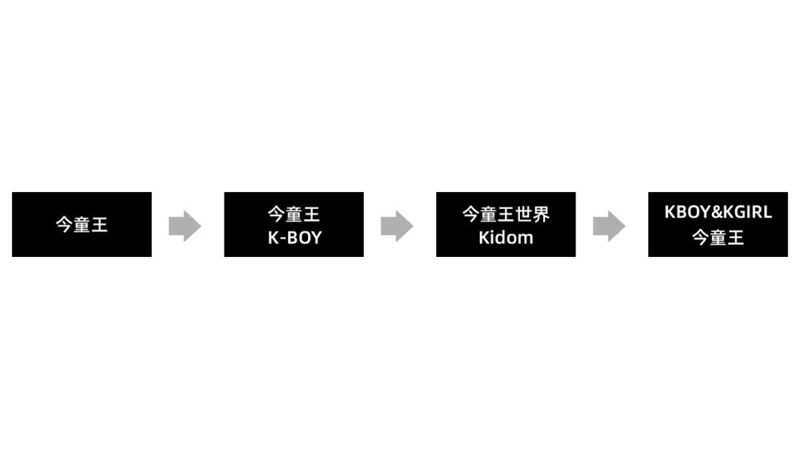
就这样，今童王的新名字诞生了：
“ KK 少年”这一品牌名中，不仅“少年”对消费者有极强的召唤性，而且“ KK ”两个字母的组合方式也能凸显一定调性，非常契合服装行业的时尚属性。华与华用哲学级的洞察和原理级的解决方案一锤定音，结束了今童王品牌名的混乱状态，构建了品牌未来发展的基础。也就是从“ KK 少年”这个名字诞生的第一天起，客户才从真正意义上开始高效积累品牌资产。“KK少年”一出生便占据了无与伦比的行业位势，品牌势能强大。品牌谚语：设计一句话让孩子说给家长听品牌谚语关键是要设计一句话，让消费者替我们去传。今童王原有的品牌口号“我潮，我酷，我快乐”显然不好传播。在市场调研时我们发现，少年装购买的过程，是家长与孩子的博弈过程，通常分为两种场景：家长代为购买：少年忙于学业，无法逛街。家长代为购买，回去让孩子试穿并决定是否退换。如果孩子不喜欢，家长即使强行买回孩子也不会穿。家长陪同购买：在购买时家长和孩子都会表达看法，当看法不一致时，开明的家长也会适当听取孩子的意见。很显然，在少年装的消费过程中，购买者是家长，使用者是孩子。家长因付费所以起主导作用，孩子因实际使用所以有一定话语权。并且，随着长大，孩子选择服装的自主权也越来越大，尤其到了青春期，孩子的偏好对购买的达成，有着举足轻重的作用。所以，对 KK 少年而言，必须要设计一句话，让孩子在挑选衣服时说给家长听。
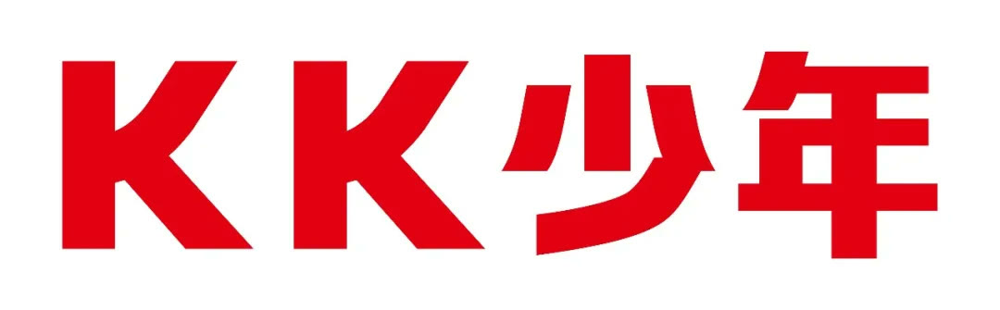
我们最终确定了品牌谚语：我穿我的， KK 少年。
“穿”表明是服饰，还有明显的指令性。“我穿我的”也非常契合青少年时期自主意识的觉醒——“我不再是个小孩子了”，“该穿什么衣服，由我自己做主”。
符号系统：超级符号及超级门头超级符号：“标字”设计一目了然今童王原有的品牌符号是一个似像非像的老虎头（老虎代表 King ，今童王的“王”），但是识别和理解的成本过高。
品牌改名后，该如何设计代表“ KK 少年”的超级符号呢？这就要用到华与华标志设计的理念：尽量做“标字”，不要做“标志”。也就是说，要一目了然见“ KK 少年”的名字，以“ KK 少年”字体为中心进行设计。这要从品牌的起源说起。品牌的英文单词“ Brand ”源出古挪威文 Brandr ，意为“烧灼”。最初来源于人们要标记自家所有家畜或是私产，人们用烧红的烙铁在这些家畜和财产上烙上自己的标志，从而和别人的同类物品区分开来。
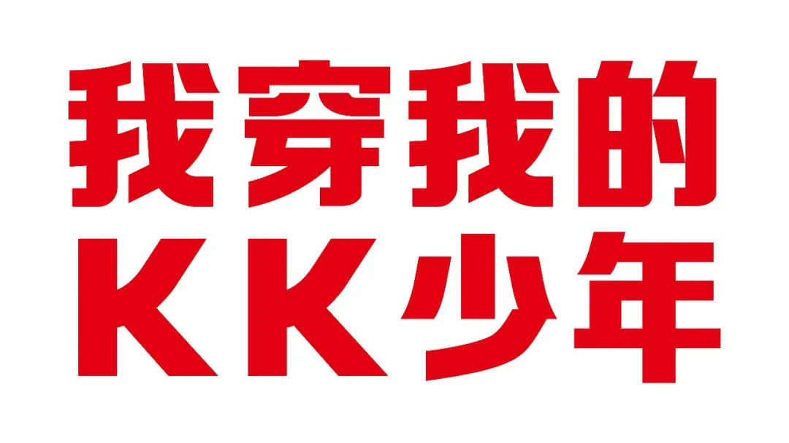
在遥远的古代，由于识字率低，用人人都认识图形（“标志”）来替代文字（“标字”）做标记；而到了现代，识字已大大普及，“标字”比“标志”更有优势。因此，“ KK 少年”比其他图形标志更具有自明性、传播成本更低，也更能够体现价值。而重新创作一个全新图形标志，反而在“ KK 少年”之外又增加了消费者的记忆成本。我们只需要考虑如何将“ KK 少年”四个字符号化。为了强化品牌名“ KK 少年”，使其有一定的抽象度、更强的符号感，同时有更明确的边界、更强的存在感，我们在设计上运用了很多品牌都会用的色块。最终， KK 少年的超级符号诞生了：
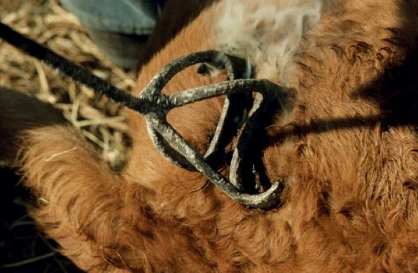
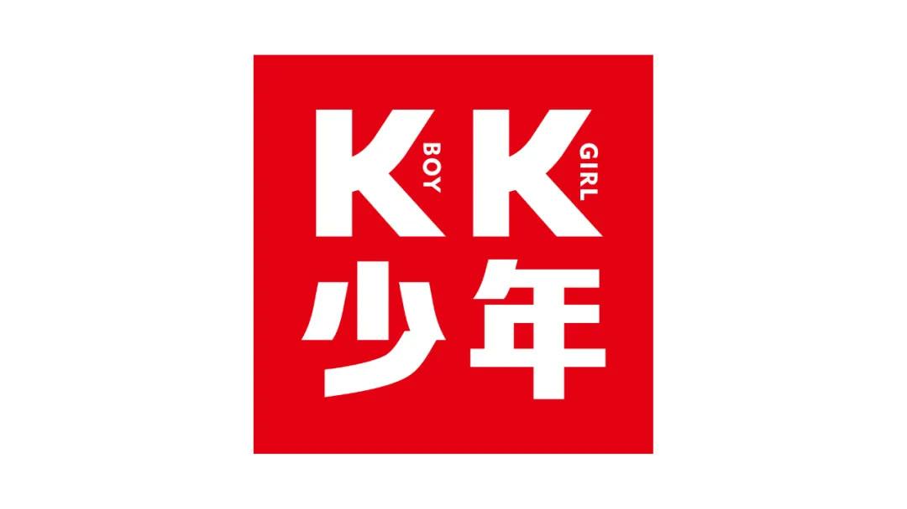
超级门头：信号能量秒杀一条街街道即货架，门店即产品。要把街道看作竞争激烈的货架，像设计产品一样设计每一家门店，尤其是每一块门店招牌，因为门店招牌就是最大的广告位。在招牌上，我们将“ KK 少年”的超级符号尽可能放大，加上红色色块所具有的视觉强制性，使其信号能量达到最强。不论白天还是夜晚，红色方标都能让“ KK 少年”的店铺在街道上脱颖而出，抢夺过往行人的注意力，秒杀一条街。
超级门头落地后，门店获客效果显著，这里我们选取了经销商访谈中一些有代表性的原话：
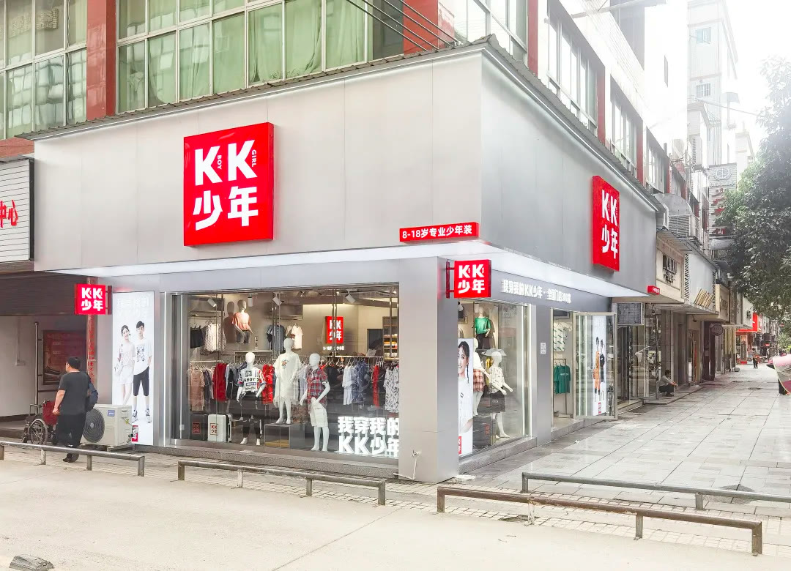
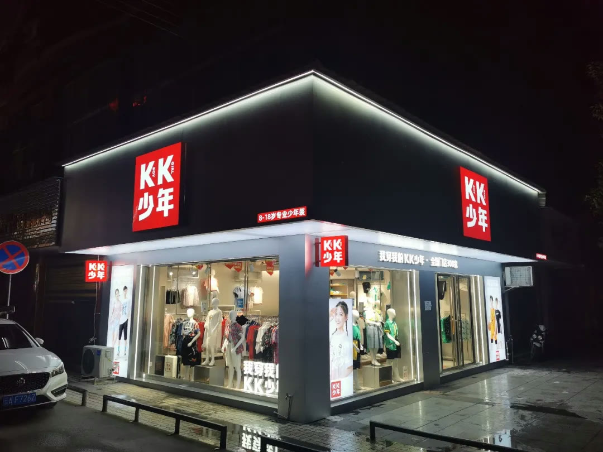
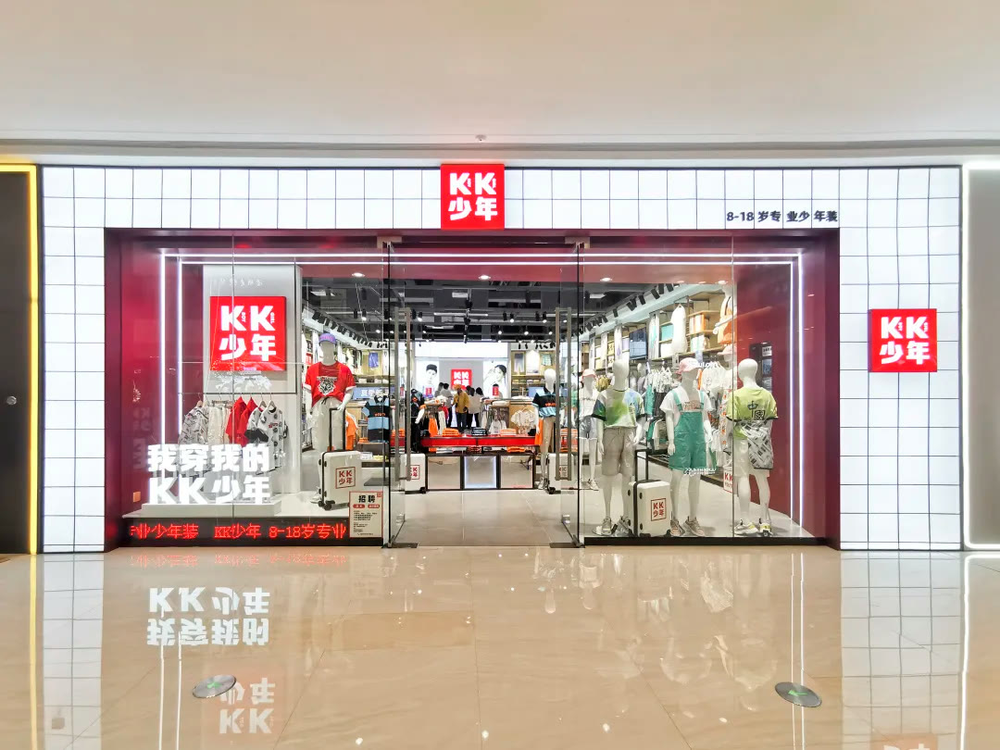
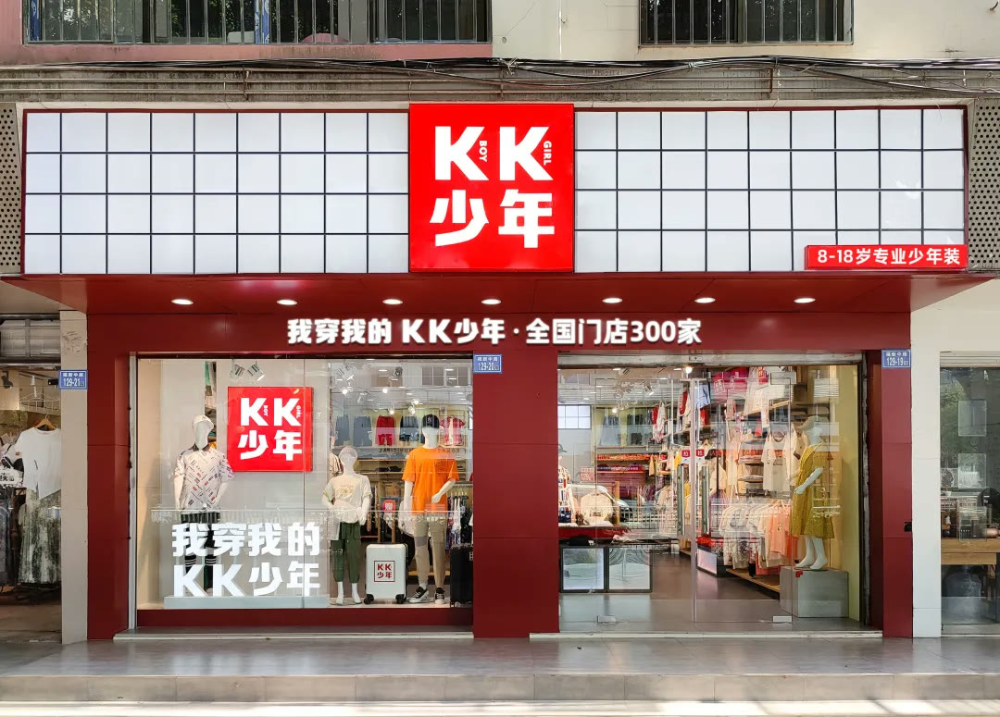
· 容易记，进店率明显有提高。人家走过门口，脸都要转过来，不往前面看。· 信号很强，其实有的人不想看，但又不得不去看，因为这个红颜色招牌（醒目）。· 我门口那些幼儿园的（家长）路过的时候都会说：“哦，这是 KK 。”原来老虎头那个不好记，英文读不出来，一般人谁知道。· 不管是谁路过，买还是不买，他都要念一下这个名字。而且这个名字朗朗上口，老人也好，小孩也好，只要读过书的，他都能读得出“ KK 少年”。有的小孩子“ KK 少年”“ KK 少年”念个不停。
产品结构：产品设计及品类结构产品设计：名副其实的少年装设计与其他产品相比，服装有着鲜明的个人偏好，且品类和 SKU 极多，所以 KK 少年产品结构的调整难度非常大。而少年装又是个全新的品类，没有人说得清楚少年装到底该怎么设计，少年装与童装在设计上究竟有何不同。我们开展了大量的案头研究，读遍了市面上能见到的与童装相关的论文、书籍和研究报告，涉及服装设计、符号学、心理学等相关学科。与此同时，也不定期驻扎一线门店进行市场调研，甚至跑到中小学门口蹲守，观察中小学生的衣着习惯。最终，我们洞察并归纳了少年装与童装在设计上的主要区别，从风格、元素、尺码等方面，都给客户提出了明确的调整建议。为了凝聚双方共识，推动产品设计升级，我们还撰写了《 KK 少年产品开发手册》给客户的设计部门作参考。
经过项目组与客户设计师团队的密切配合和共同努力，今童王成功将产品设计由中大童装逐步调整为名副其实的少年装。
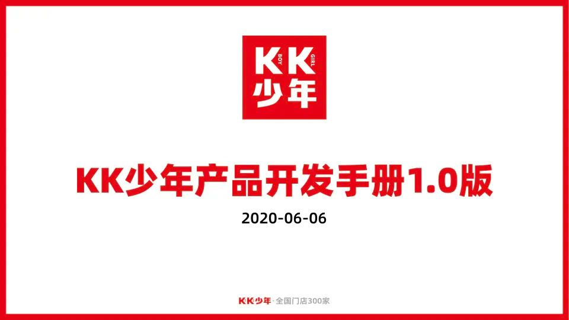
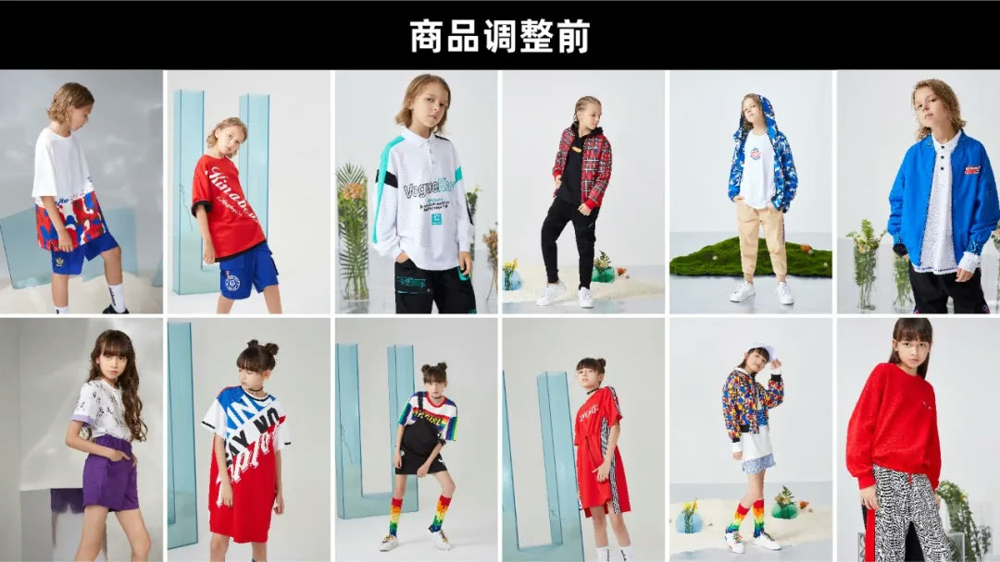
品类结构：增加内搭基本款品类如前文所述，企业是为社会解决某一方面的问题，而品牌就是企业对解决该问题的完整承诺，承诺越完整，则社会通过该企业交易的成本越低。在与华与华合作前，今童王产品定位为“轻奢潮品”，外穿流行款在品类结构中占据较大比重。但是，“大孩子不好买衣服”这一社会问题，消费者不仅不好买外穿流行款，也不好买内搭基本款，甚至由于少年日常着装以校服为主，后者的需求反而更大。所以，定位为“ 8 - 18 岁专业少年装”的 KK 少年，要增加内搭基本款品类在品类结构中的比重。
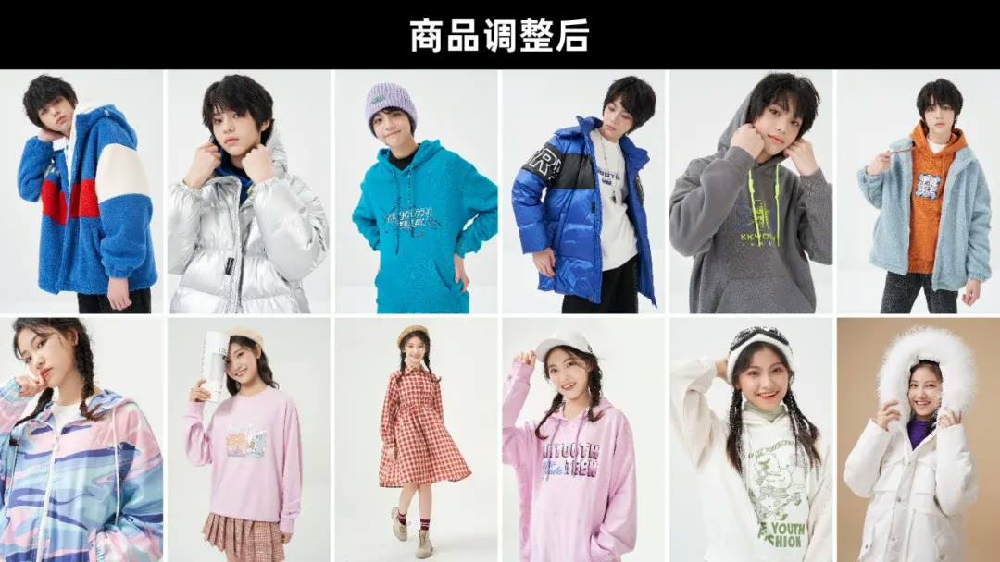
如今， KK 少年的产品开发线已涵盖时尚运动、校园复古、国潮等风格系列，既紧跟流行，又百搭耐穿，深受广大少年消费者的喜爱。
3两大系统抓手赋能企业经营管理华与华认为：没有创意，战略等于 0 ；没有手艺，创意等于 0 ；没有执行，一切等于 0 。无法坚决地执行落地，再好的企业转型战略和品牌顶层设计都没有意义。对今童王这样的中小企业客户来说，华与华的价值不仅在战略营销品牌问题的咨询，还在于企业文化和经营管理思想的借鉴，在于转型阶段的定心和陪伴。华与华的事业不断发展壮大，靠的是三大系统：除了华与华方法（ HHM ），还有华与华人与文化（ HHPC ）、华与华生产方式（ HHPS ）。外界往往只关注华与华方法，其实后两者才是不轻易示人的“宝藏绝技”。
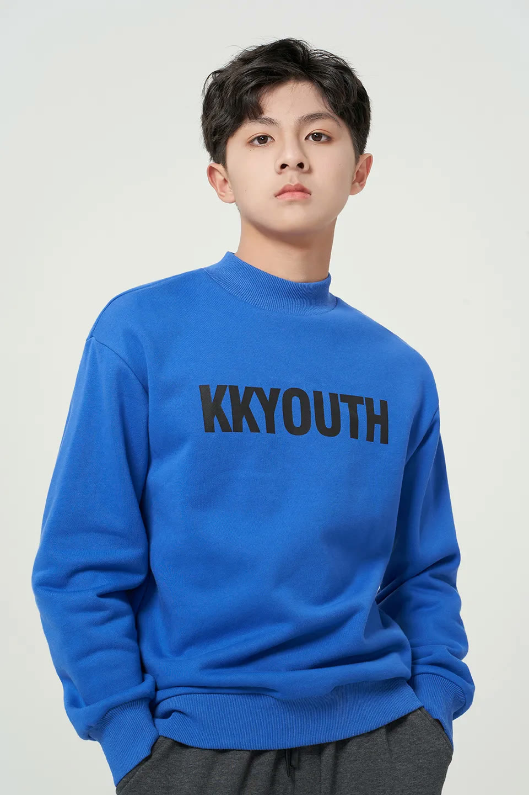
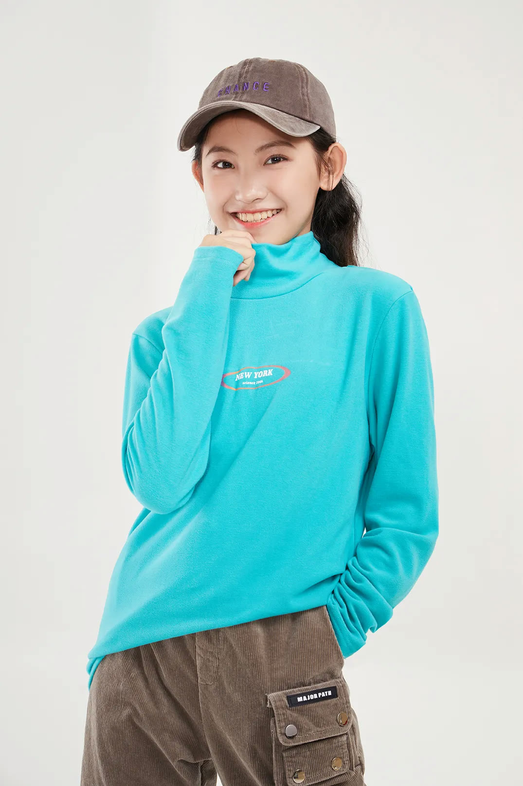
在服务客户时，我们用华与华方法帮助客户输出方案，也可以用华与华人与文化、华与华生产方式推动客户落地方案。在服务今童王时，为了推动方案落地，华与华以企业文化体系构建和工作流程改善为抓手，深度介入今童王的日常经营管理，持续为今童王赋能。
人与文化的赋能：企业文化体系构建企业文化是企业的“软制度”。企业文化半径小，可以深刻影响每一个员工的言行，将企业塑造成一个拥有共同价值观的文化社区；企业文化半径大，可以超出自己的企业范围，甚至无远弗届，影响全社会。我们以华与华人与文化（ HHPC ）的理念为指导，根据今童王的发展历程和资源禀赋，梳理出完整的企业文化体系，潜移默化地影响员工行为，并最终成为今童王每位员工遵循的价值观和行为方式。
生产方式的赋能：工作流程改善华与华学习日本丰田生产方式，逐步形成了具有自己特色的华与华生产方式（ HHPS ）。我们将这一系统毫无保留地与客户分享，以提升客户日常的工作效率，减少浪费。
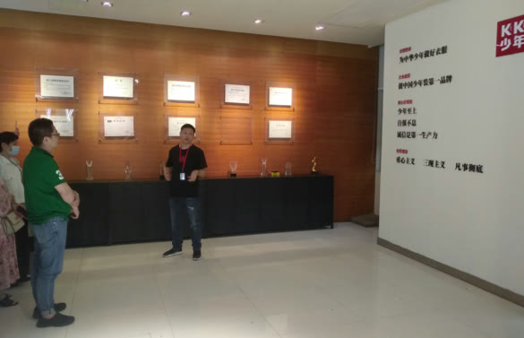
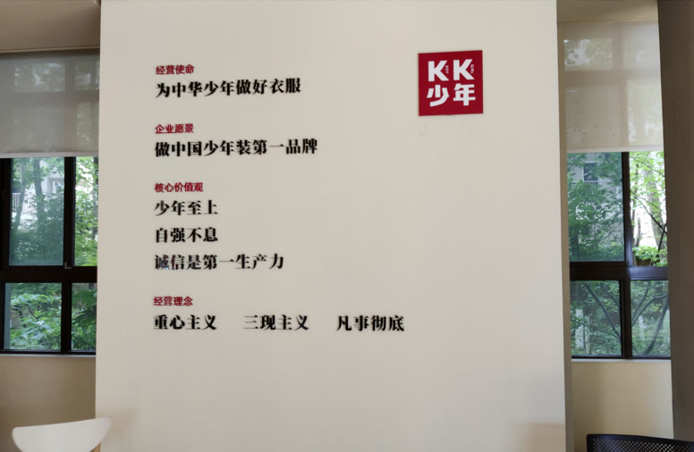
除了日常的晨晚会、培训会，还积极策划每一季的订货会和经营会。大到活动物料的设计，小到宣讲 PPT 的撰写，华与华都不遗余力地协助客户。
有三大系统的加持，华与华与今童王形成了水乳交融、同甘共苦的协作关系，双方并肩作战，成功克服了疫情影响、资金紧缺等一系列困难，不断将转型事业向前推进。2020 年 10 月， KK 少年正式发布全新品牌形象，向消费者、向全行业传递“做中国少年装第一品牌”的宏大愿景。新形象投入使用是 KK 少年迈入新阶段的里程碑，也是品牌驶入发展快车道的指路牌。
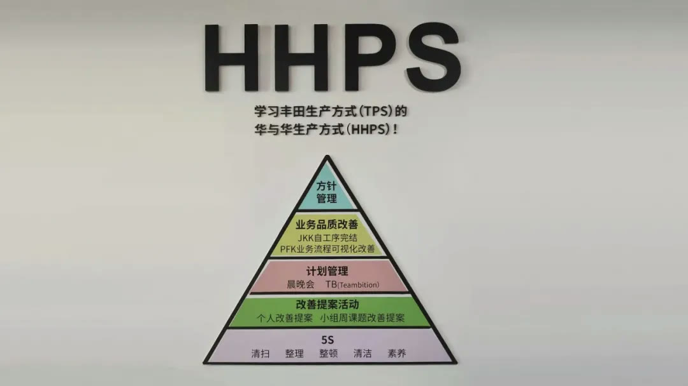
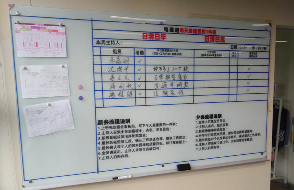
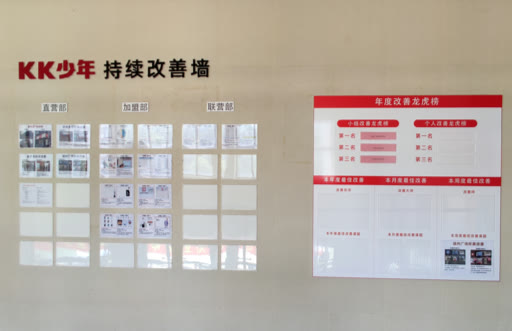
▲ KK 少年董事长濮新泉先生和分公司代表启动品牌升级
▲经销商士气高涨
随后，超级符号和超级门头开始在全国门店加速落地，今童王脱胎换骨，成为 KK 少年，品牌影响力大幅提升。目前， KK 少年发展势头迅猛，线下门店已达 300 余家，遍布全国 22 个省和 100 多个城市，形成覆盖百货商场、购物中心、步行街和奥特莱斯的全渠道发展格局。
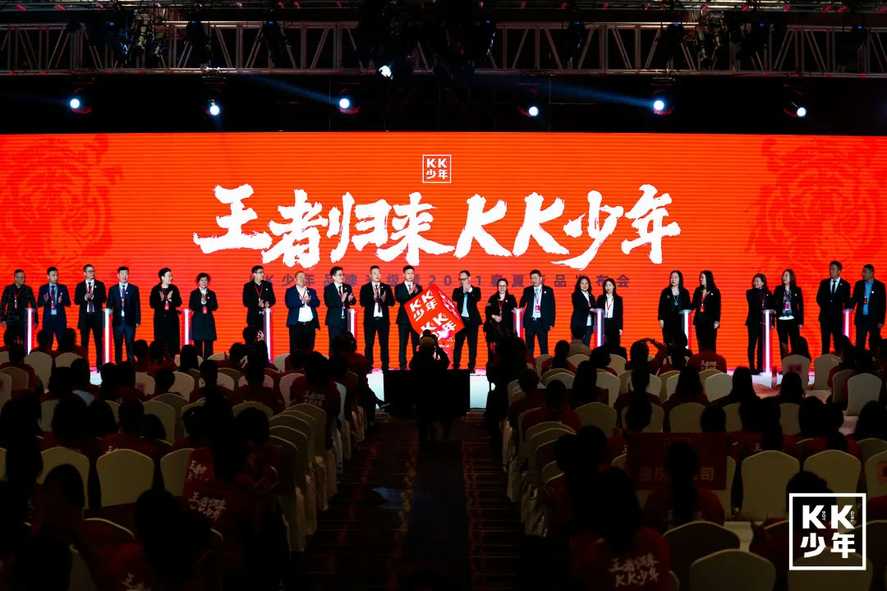
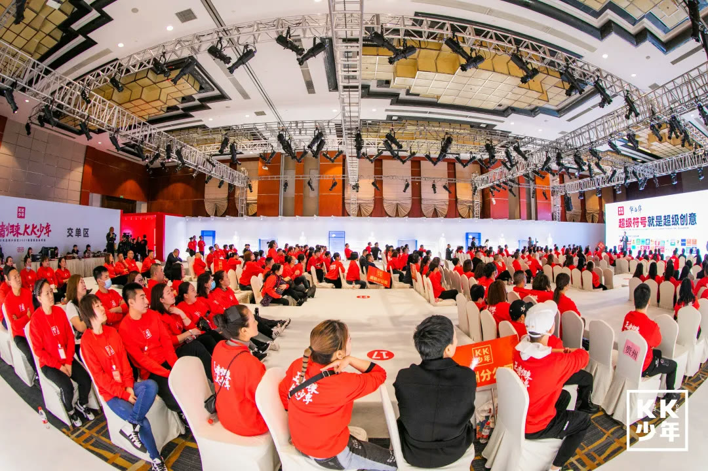
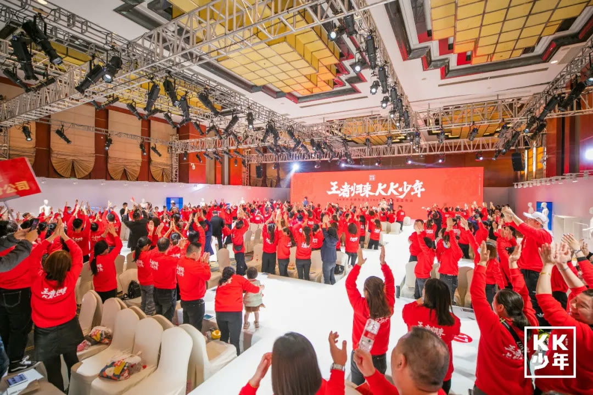
在 KK 少年之后，越来越多的服装企业也开始在少年装领域发力，中国少年装行业呈现一片蓬勃发展的景象。而 KK 少年，也成为中国少年装行业当之无愧的领军品牌！本文总结总结 KK 少年案例的三大要点：1 、确定核心课题，规划企业转型战略。企业战略不是企业的战略，而是企业为解决某一社会问题，为社会制定的战略。今童王从解决社会问题和企业自身资源禀赋出发而确定的转型方向，才能让企业持续生存和壮大。2 、一次做对做全，重构品牌顶层设计。品牌顶层设计至关重要，决定了品牌资产积累的效率和品牌未来的发展，必须从话语体系、符号系统和产品结构三个维度系统性考量。3 、两大系统抓手，赋能企业经营管理。没有坚决的执行落地，再好的企业转型战略和品牌顶层设计都是苍白的。华与华参考华与华人与文化（ HHPC ）、华与华生产方式（ HHPS ）两大系统，以文化体系构建和工作流程改善为抓手，提升客户工作效率，赋能客户经营管理，推动各项方案的落地。
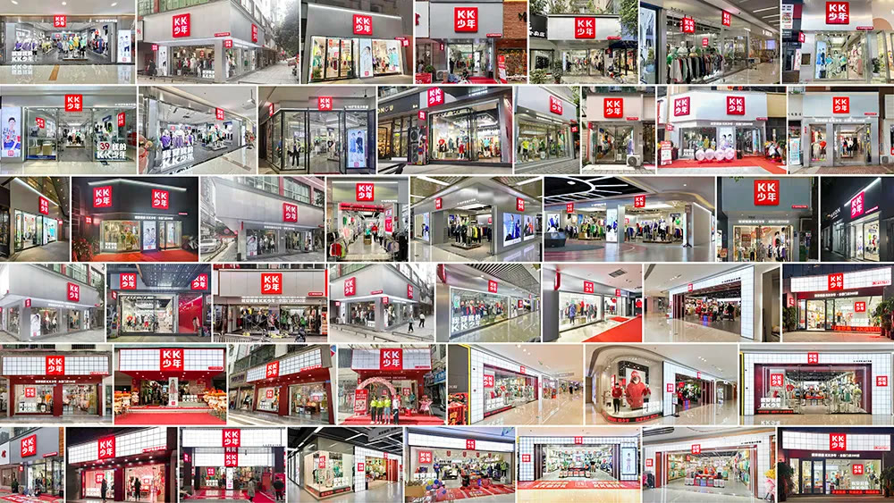
中小企业也有大梦想。华与华愿意与处于战略转型期的中小企业客户一道并肩战斗，攻坚克难，创造更远大的前程！